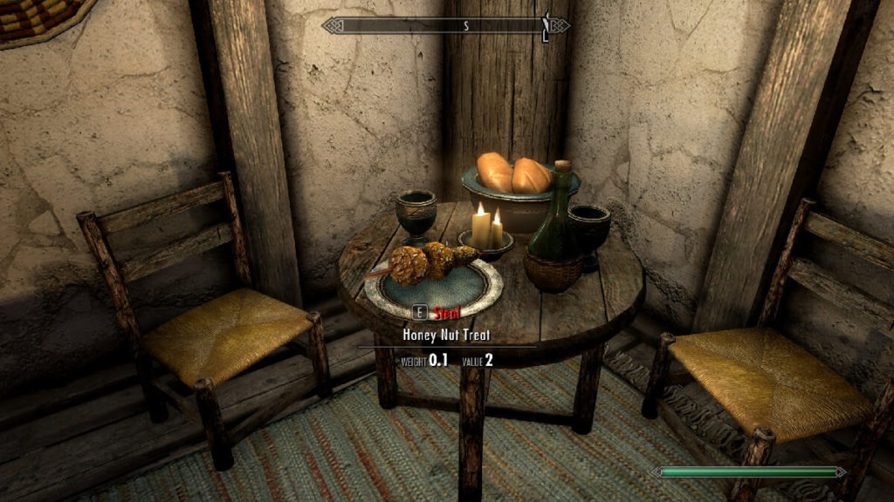

Honey Nut Treat from The Elder Scrolls V: Skyrim

Honey Nut Treat is the perfect quintessence of the simplicity of Skyrim cuisine –
nuts in various forms, honey and cereals. Simple, nutritious and tasty at the same time.
Maybe the appearance leaves a lot to be desired (visual associations are probably obvious
) – but it do tastes great. You do not necessarily have to place balls on a stick, it’s
enough to form them to the size of standard pralines and serve them on a plate.
Dovahkiins recommends it for dessert!
Ingredients
- 40g mixture of walnuts, hazelnuts, cashews
- 30g unsalted peanuts
- 60g oatmeal
- 75g honey
- 60g peanut butter
Steps
- Cut nuts roughly into smaller pieces – walnuts into quarters, hazelnuts and cashews
in half.
- Add honey and peanut butter to the saucepan. Heat on low power for about 1 minute,
stirring constantly. When the mass becomes smooth and combined, turn off the
heater.
- Put nuts, peeled peanuts and oatmeal into a warm honey mass. Mix everything thoroughly.
When the mixture has cooled down a little, put it under the cover for 30 minutes in
the fridge.
- Take mass out of the fridge and form balls of various sizes, which should be put on
sticks. Chill them in the fridge.
- Remove Honey Nut Treat from the fridge about 30 minutes before serving. It goes well
with a mug of dark, bitter beer.